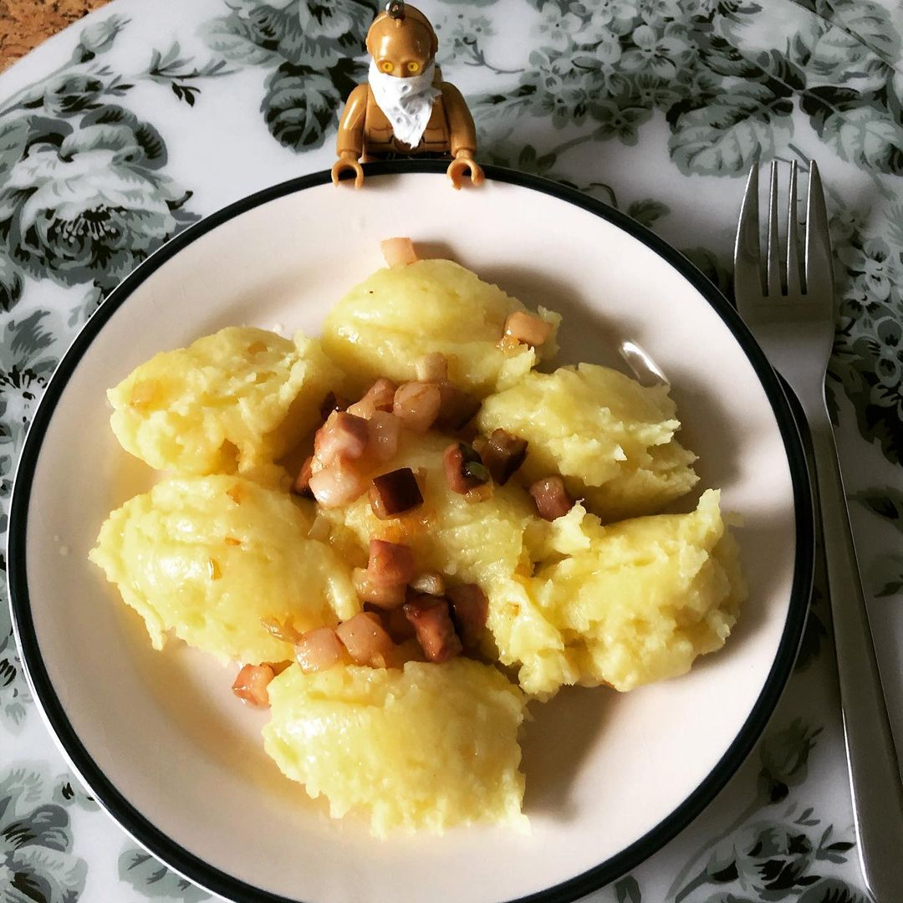

Dzatky
Rychle, jednoduche a len z par surovin
Do dnes som toto jedlo nepoznala ale je to stara, overena klasika nasich babiciek.
.
.
.
#dzatky#tradicnerecepty#varimzozasob#somdoma#nosimrusko#c3po#kitchenwars#knowwhatyoueat#lovetocook#dowhatyoulove#varimevkarantene#varimeskristianou